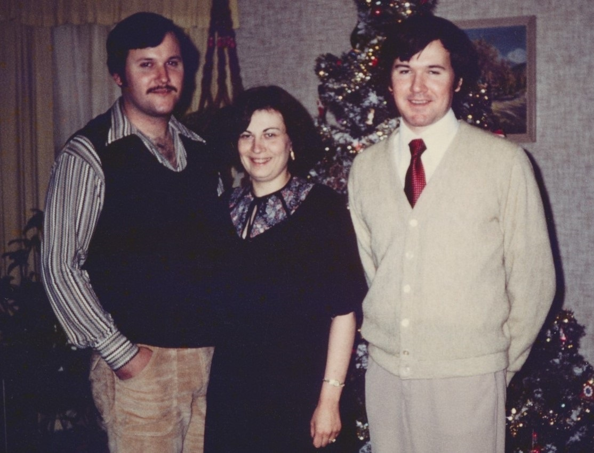

{% if site.data.settings.hero.enable == true %}
<!-- begin hero -->
<section class="hero">
  <div class="container">
    <div class="row">
      <div class="col col-12">

        <div class="hero__inner">
          {{ if site.data.settings.hero.hero__title }}
            <h1 class="hero__title">{{ site.data.settings.hero.hero__title }}</h1>
          {{ end }}
          {{ if site.data.settings.hero.hero__description }}
            <p class="hero__description">{{ site.data.settings.hero.hero__description }}</p>
          {{ end }}
        </div>
<h2>Introduction</h2>
<p>My name is Allen Grasser, the brother of Norman John Grasser, formerly known as “JOHN DOE – 1980“ from Oneida County, Wisconsin.</p>
<p>In my presentation today, I will try to give you a true and accurate representation of the events of Norm’s early life before his disappearence on January 20th, 1980!</p>
<p>Also a timeline will be included of the 10 month long journey from when I was first told that my poor brother was found, until he was finally re- interred with our long departed mother.</p>
<p>In addition, all the circumstances of when, where and how my brother died will be explained!</p>
<p>I will also talk about some of the amazing events and co-incidences that happened over the course of 40 plus years that made it possible for my brother to be found!</p>
<p>And finally, in my conclusion I will give a final thought relating to my brother’s fate and difficult journey in life, plus the epiphany that I experienced at his funeral!</p>
<h2>Norman's Biography</h2>
<p>So, Norm was born on Saturday, March 20th, 1948, in Chicago, Illinois to his parents Cyrill Grasser and Marjorie née Schwering. He was my older brother, who I looked up to while growing up in Chicago. We both came from a typical middle class, staunch Catholic family with Midwestern values and beliefs.</p>
<p>We both went to parochial grade school and high school. Norm went one year to Loyola University Chicago at its lakeshore campus, but dropped out the following year.</p>
<p>At that time in history, the Vietnam war was at its height. So when he dropped out of college, his educational military draft deferment became invalid. Because he didn‘t want to be drafted into the regular army, he decided to join the United States Navy. On January 4th, 1968 he enlisted and reported to “Boot Camp“ at Great Lakes Naval Station just north of Chicago. I was told later that he washed out shortly after joining because of medical reasons. He was released from active service with a Honorable Discharge.</p>
<p>Norm loved going on long walks and exploring nature trails at the local forest preserves. This was the zeitgeist era of the 1960’s and ’70’s, the spirit of the times with regards to the environmental protection movement.  On many family trips to our family farm in northern Wisconsin, he would explore the wooded area of the farm that bordered the Peshtigo river. This was his real “Modus Vinendi“! His true “Way of Life“! He loved the “Great North Woods“ of Wisconsin!</p>
<p>Norm lived for awhile on his own during the early 1970’s. He work as a mail carrier for the United States Postal Service then. It was during this time that he wrote a fictional noval about being young and a free spirit!  But unfortunately, he could not get it published.</p>
<p>He then turned his attention to writing our family’s history and genealogy.  During our youth, our mother’s mom, our maternal grandmother came to visit us from Iowa. It was during this trip to Chicago, that she suffered a massive heart attack and become bedridden at our home for the next 10 years until her death at the advanced age of 91 in the year 1971.  My brother spent many hours with her. He would listen to all of her stories, and wrote down her life and times in an orgnized family tree. He began corresponding with all the older family members recording their birth dates and the death dates of family that had already passed. He gathered and copied old family photos, and also identified them all. He finally placed all of his research into a big scrapbook with hand written stories for each famly. My brother laid the foundation for the Grasser Family History!</p>
<p>The first entry of this genealogy of course was Norm‘s. But who would have thought that last year, because of him being found, his updated death date and location would be the last entry entered into our genealogy!  The first and last entry spanning over 50 years was his own entry, which makes it the “Alpha and the Omega“, the first and last entry of our family history!</p>
<p>And then sadly on January 20th of 1980, shortly after Christmas, he disappeared at the age of 31 without a trace!</p>
<h2>Timeline</h2>
<p>This next segment covers the 10 month long journey from when I was first notified of my brother being found, until he was later re-interred with our mother.</p>
<p>Well it all started with “the Phone Call“, which came just out of the blue on the day after Memorial Day, May 30th, 2023! It was a Tuesday morning when Detective Sergeant Brian Barbour of the Oneida County Sheriff’s Department called. I was at the famly farm at the time and missed his call. But he left a message that sounded very official! He said, [deeper voice] “This is Detective Sergeant Brian Barbour of the Oneida County Sheriff’s Department, please return my call!“</p>
<p>I said to my self, “Holy SCH...EISSE“! Pardon my German explative! I thought, what the hell did I do to warrent a call from the County Sheriff?  But when I called him back, he eventually asked me if I knew Norman Grasser ? My mouth opened in disbelief ! It must have been 10 seconds or more of silence before I slowly said „Yessss? He began saying that they believed they had identified my brother who had been missing for 43 years! Just then, I felt my whole world becoming unbelievably so SURREAL!!!</p>
<p>He and the Oneida County Medical Examiner, Crystal Schaub wanted to see me in order to explain the case and perform a DNA test on me to be submitted to the FBI in Quantico, Virginia for verification of a “brother match“ to their John Doe-1980.</p>
<p>They were prepared to travel to Chicago, but I told them that I was not in Illinois right now. I said that I was on my farm in Marinette County, Wisconsin, which was only a two hour drive from Oneida County. They both decided to come to my farm the next day. They stayed for over 3 hours explaining the case to me and finally left with my DNA sample.  The Medical Examiner thought it would take maybe 2 or 3 months to receive the results. But after 3 months, I called Crystal Schaub, who in turn called the FBI and was told it would be a minimum of 6 months!  Unfortunately, during that time period the horrific fire disaster on the Hawaiian Island of Maui occurred. The city of Lahaina requested the FBI to help with identifying their burn victims using DNA analysis. Because the FBI prioritized the DNA Identification for Maui victims, my DNA analysis was pushed back.</p>
<p>Finally, after 7 months I received a phone call from the M.E., “Medical Examiner“ on December 11th, 2023 that the DNA test that I took was a “positive brother“ match with Oneida County’s John Doe - 1980.  The M.E. then isued a “Press Release“ on Friday, December 15th, 2023 that publicly announced that the case of John Doe - 1980 was solved and that his name was “NORMAN GRASSER of CHICAGO“!</p>
<p>Because of Norm’s Chicago connection, CBS News in Chicago that evening at 6 p.m. televised “Chicago man’s body identified by students after 43 years!“ A video of that report is available on YouTube.  In Marinette County, Wisconsin where the Grasser family farm is located, the “Peshigo Times“ Newspaper printed its headline on March 6th, 2024 that read “DNA finds 43-year-old missing person identity!“</p>
<p>And finally Ramapo College of New Jersey ran its own story on-line @ Ramapo.edu that declared “Ramapo College IGG students use investigative genetic genealogy to identify John Doe in 43-year cold case.“</p>
<p>Back in Rhinelander, Wisconsin on Febuary 23rd of last year, the courts there approved the request that legally gave my brother’s real name back to him by re-issuing a revised death certificate and authorizing the exhumation of his remains, which happened later that day.  His remains were cremated at a local funeral home and made available to me on March 1st, 2024 when I traveled to Rhinelander to bring him back home to Chicago.</p>
<p>On Norm‘s birthday, March 20th, he was finally re-interred with our mother at “All Saints Catholic Cemetery“ in DesPlaines, Illinois thus ending the 10-month long journey to be re-united with our family once again. This finally provided “CLOSURE“ and an ending to the decades long ambiguous loss and disenfranchised grief following his disappearance!</p>
<h2>Death of My Brother</h2>
<p>When did my brother die?</p>
<p>Where did he die?</p>
<p>And how, How did he die?</p>
<p>These have been the foremost burning questions that have haunted me for over the last 43-years! Ultimately, the answers to those questions only came to light after my brother was finally genetically identified by Ramapo College of New Jersey.</p>
<p>Ramapo’s IGG Department notified the officials of Oneida County of a possible DNA brother match to their John Doe – 1980 in the early part of 2023. The Oneida County Sheriff’s Department then conducted their own follow-up investigation, to search for me.</p>
<p>On Wednesday, the 31st of May of 2023, Detective Sergeant Brian Barbour and Medical Examiner, Crystal Schaub found me in Marinette County, Wisconsin on my farm and were able to explain all the details of my brother’s sad but amazing story to me.</p>
<p>The question of when he died will never be totally known because his body was discovered laying face up in a forested area, that was not frequented by many people. March 19th, 1980 was the date that he was found, which was the day before his 32nd birthday. The autopsy report later reveled that his body was starting to decay, so his official death date could not be accurately determined. But the mere fact that he disappeared on January 20th showed that was gone for only 9 weeks and two days before finding him dead.</p>
<p>The question of where he was found as revealed to me was from his death certificate. The exact spot was about 4-miles north of Rhinelander, Wisconsin just off of U.S. Highway 17 in a secluded stand of pine trees.</p>
<p>This area was officially located in the Town of Pine Lake, Wisconsin. The Sheriff‘s Department believed that he was traversing by foot possiblely toward the city of Rhinelander, which is the county seat for Oneida County.</p>
<p>And the last question of how he died was theorized by the Medical Examiner referencing the autopsy finding that he suffered from a small contusion on the back of his head. This indicated that he might have fallen backwards after slipping and losing his balance on ice and/or snow thereby hitting the back of his head rendering him unconscious. And because of the winter conditions at that time, his body began to shut down from the extreme cold exposure. He basically froze to death! The medical term is called Hypothermia.</p>
<p>The Sheriff’s Department determined that the cause of death was accidental and that there was no foul play involved. Possible proof of that was the fact that his wallet contained a little over 25 dollars, which ruled out theft as a possible motive, plus the fact that there was only one set of footprint tracks in the snow, indicating that he was alone. Unfortunately the County Sheriff’s Department could not find any proof of identity on him. And thus, he was called John Doe – 1980 for the next “43-years“!!!</p>
<h2>Piecing the Puzzle Together</h2>
<p>Finding my brother could be similar to the analogy of the Brothers Grimm fairy tale, Hansel and Gretel, where in this case the “Breadcrumb trail“ was actually a trail of clues that followed back to me!  Of course, DNA analysis played the biggest part of the puzzle.  On August 29th, 2015 I took the Ancestry.com DNA test. I was the first of my family to do this. Because I did genealogy as a hobby, my motivation to take this test was strictly to find what my ethnicity was not knowing that my DNA would one day lead to the identification of my long lost brother!</p>
<p>On a whim from a fellow genealogist relative of mine, I downloaded my raw DNA sequences from Ancestry.com and submitted it to FamilyTreeDNA.com by doing a free autosomal DNA transfer. At the time, I really wasn’t enthused with the amount of DNA matches from FamilyTreeDNA.com as compared with Ancestry.com’s DNA matches.  So going forward, I never really used the FamilyTreeDNA.com‘s web site and after that I sort of forgot about it.</p>
<p>But according to Ramapo’s IGG Department, Ancestry.com’s DNA data base is secured and private, whereas FamilyTreeDNA.com was available for them to search, this streamlined their match back to me that I was [right hand raised thumb toward me] “their GUY“! I found that to be an amazing incredible co-incidence that that all happened!</p>
<p>A numer of years after my brother’s disappearence, my parents decided to give me all of the family research that my brother had gathered. Life was pretty hectic back then for me, and I didn‘t have a chance to really go through all of his work. But gradually, I began recording all of his research onto a computer Family Tree program to expedite retrieval of family data. I also scanned all the old photo images and edited out all the defects with Microsoft‘s “MsPaint“ program, which is a simple raster graphics editor.</p>
<p>Over the years of doing genealogy, I periodically hit the perverbial “BrickWall“ many times, but one by one I over came those obstacles.  Sometimes ideas came to me by chance interactions with other researchers. Sometimes solutions were revealed to me “in dreams“. But most of the time, it came from the ever evolving source records that were made more and more available to the general public. My mantra for success with genealogy is that “One can see further on the shoulders of others!“ [repeat more slowly] “One can see further on the shoulders of others!“ And today, I have accumulated over 30,000 person entries in my Family tree! So I have definitely carried on my brother’s legacy, which he had “inadvertently“ “instilled in me“ some 45-years ago!</p>
<p>In 1995 a new forum appeared on-line that I fully embraced. It was created by Jim Tipton, a Salt Lake City resident, who named it “Find-a-Grave“.  Over the years, I created numerous memorials on Find-a-Grave for my family that contained short biographies with pictures.</p>
<p>When my first born son died in 2014 and then my wife 2½ months later died, basically from a broken heart, I memorialized both of them on Find- a-Grave. And it was in August of that year that I also memorialized my brother, Norm, who had disappeared some 34 years earlier. I posted some of his favorite pictures. I also mentioned that he disappeared on January 20th, 1980 and that a missing person report was filed with the Chicago Police Department. Later in June of 2016, I commissioned a tombstone “In Memoriam“ to be made with his name on it and to be placed on our mother’s grave. On this stone was an image of Saint Anthony. For those of you that don’t know, Saint Anthony is the patron saint for “missing persons“. I invoked St. Anthony to pray for us, that my brother was missing but not forgotten!</p>
<p>In 2023 my co-presenter, Ms. Traci Onders from Ramapo’s IGG Department was “the person“ that found this memorial that I had created 9-years prior. In retrospect, I was just trying to find “closure“ in using “Find-a-Grave“ as a means to an end. But each time that I did this, I was actually leaving “Breadcrumb clues“ back to me! And this discovery by Ms. Onders was “the clue that sealed the deal“ with their investigation.</p>
<h2>Final Thoughts</h2>
<p>While driving through the “Great North Woods“ of Wisconsin, on my way to Rhinelander to retrieve my brother’s cremains, a song came on the radio. It was an older song from 1995 sung by a Canadian / American, [pause] singer / songwriter, who I believe, won a Grammy award for it.  Her name was Alanis Morisette. And the song was called: Ironic.</p>
<p></p>
<iframe src="https://www.youtube.com/embed/Jne9t8sHpUc" height="600" width="100%"></iframe>
<p>And it starts out like this....</p>
<p></p>
<p>An old man, turned 98</p>
<p>He won the lottery and died the next day!</p>
<p></p>
<p>It‘s a black fly in your Chardonnay.</p>
<p>It’s a death row pardon, two minutes too late!</p>
<p>But in my head, I heard the last verse sounding like this...</p>
<p>It‘s a missing brother, who had lost his way!</p>
<p>But DNA found him, only 43 years too late!</p>
<p>And isn‘t it Ironc! Don’t you think!</p>
<p>A little too... Ironic! And, yeah, I really do think!</p>
<p>And who would’ve thought it [tighten fist] figures!</p>
<p></p>
<p>One final thought.While attending my brother’s funeral, I experienced an epiphany, a sudden revelation that there was something more than just the scientific explanation for finding my brother! I asked myself, why did I do the things and make the choices in my life that also made finding my poor brother possible?</p>
<p>Why did I even take a DNA test on my own in the first place? Why did I upload my raw DNA to FamilyTreeDNA‘s searchable data base? Why did I create my brother’s public memorial on Find-a-Grave? Why did the Medical Examiner from Oneida County, Wisconsin recover my Brother’s DNA after being in the grave for over 40 years? And why did Ramapo College of New Jersey, IGG Deparment select my brother’s case for identification using reverse genetic genealogy?</p>
<p>It occured to me after looking at my brother’s decade old memorial stone again. And seeing the image of St. Anthony on it and remembering the invocation that I had asked him “to Pray for us“, but in doing so, I also “implored“ him to help us in finding my brother! Because of all that, I truely believe, that the choices in my life and others were also guided.  Yes, guided by a divine power, which also contributed in finding my brother!</p>
<p>At his funeral, on March 20th of last year, which was also his birthday, I proclaimed in front of everyone that attended the sevice, that I had been praying for this day to happen for 44 years! And through the intervention of St. Anthony, my prayers were finally and dramatically answered! My brother’s cremains were finally re-united with our family and buried with our mother, who suffered the most with his disappearence!  Then looking upward, I thanked St. Anthony for giving me this “miracle in my life !!!“</p>
<h2>Conclusion</h2>
<p>In conclusion, I would like to take this opportunity to thank personally the Ramapo College of New Jersey and its Investigative Genetic Genealogy Department. The IGG! My deepest appreciation and humble thanks!</p>
<p>I also want to send a special thank you to my co-presenter, Ms. Traci Onders for her support and finding my “breadcrumb clue“ on Find-a- Grave that led back to me! Thank you Traci, so much!</p>
      </div>
    </div>
  </div>
</section>
<!-- end hero -->
{% endif %}
